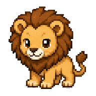
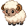
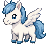

Wood
木のライオン

若葉を育てるライオン
勢いだけでなく、まわりを育てながら前に進むタイプ。
数秘 3
血液型 O
属性 木
Animal Sprites
動物占いに使う12種類のドット絵です。カード用の大きめ画像と、Pet風に動かすための48x48スプライトを同じページで確認できます。


Five Elements Card
動物、五行、数秘、血液型を1枚の結果カードにまとめるためのプレビューです。
Wood

若葉を育てるライオン
勢いだけでなく、まわりを育てながら前に進むタイプ。
数秘 3
血液型 O
属性 木
Analysis Room
動物占い、五行、数秘術、星座、血液型を分けて見ます。結果カードの選択を変えると、ここの分析も一緒に変わります。
1. Animal
動物占い2. Five Elements
木3. Numerology
34. Zodiac
星座5. Blood Type
ODeep Reading
動物タイプを土台に、五行、数秘術、血液型を重ねて詳しく読みます。
Animal Core
Good Points
Care Points
Overall Luck
Image 2.0 Prompt
この結果カードを、Image 2.0で1枚のビジュアルにするためのPromptです。
Result Stock
このブラウザで診断した結果を保存します。公開用の集計にする前の、結果データの控えです。
Preview
カードをクリックすると、Pet用のidle 4コマ表示に切り替わります。